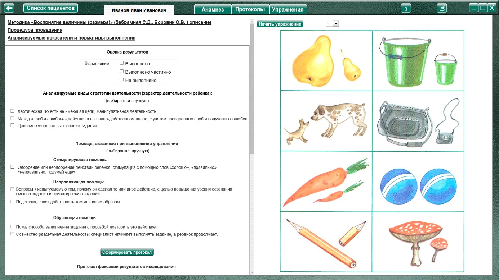
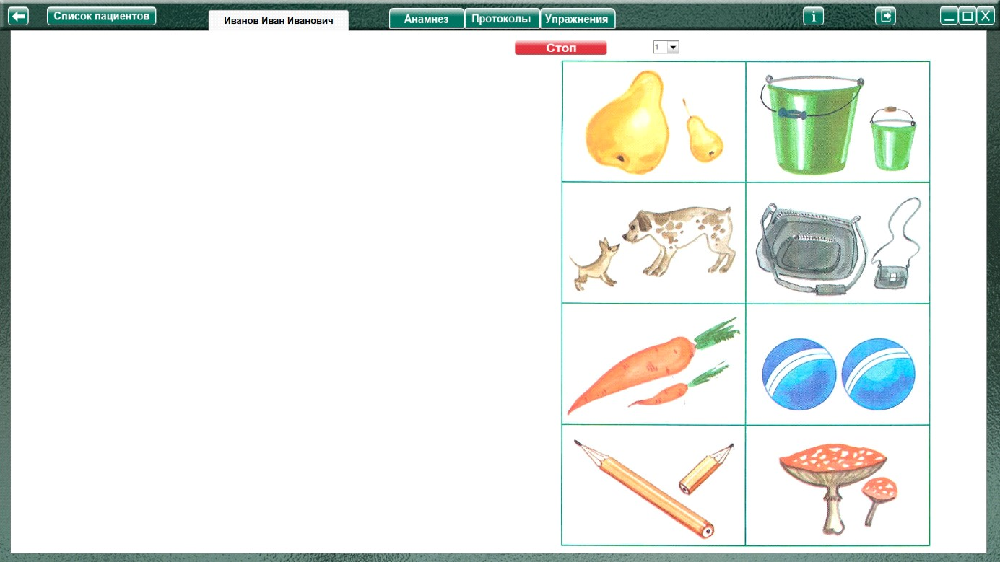
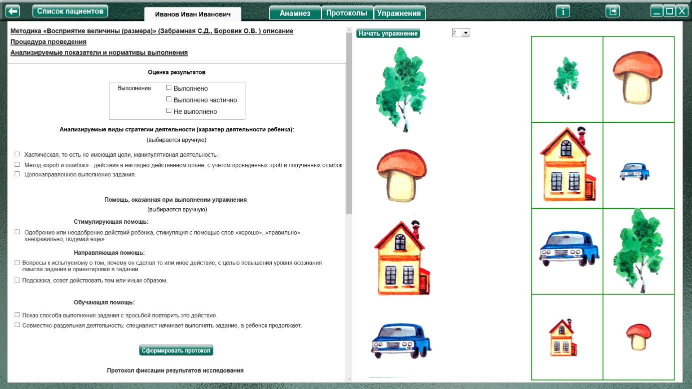
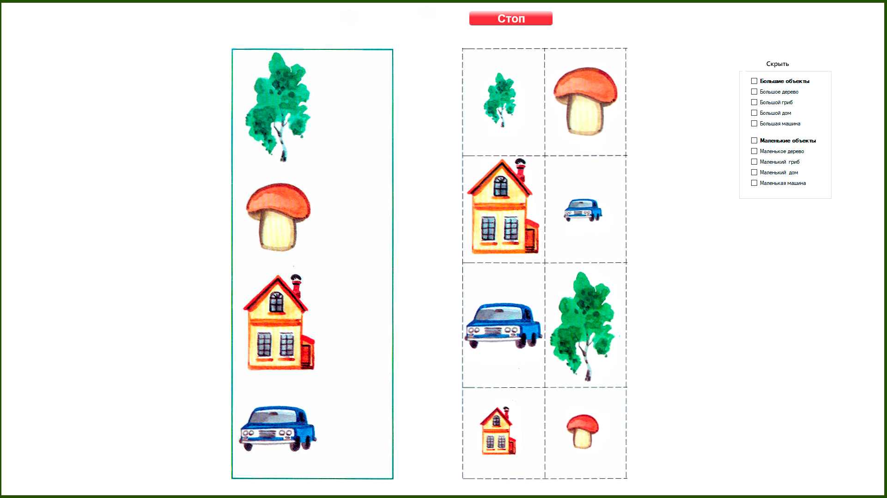
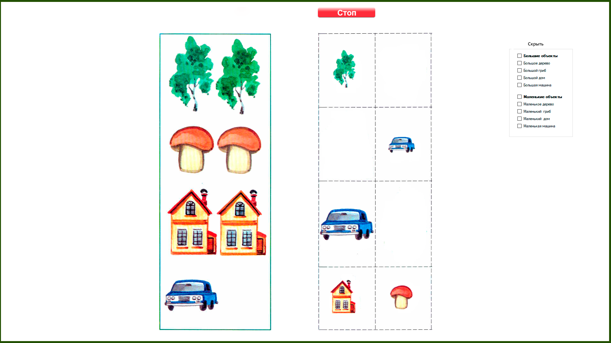

Методика "Восприятие величины (размера)" (Забрамная С.Д., Боровик О.В.)
Методика "Восприятие величины (размера)" (Забрамная С.Д., Боровик О.В.) описание
Процедура проведения.
Задание 1
Дано изображение нескольких пар одних и тех же предметов, различных по величине (большая и маленькая собачка и т. д.). Ребенку дают задание типа:
«Покажи маленькую собаку», «Покажи большую морковку».
Затем предлагают такие, например, вопросы:
«Какая это груша?», «Какая это сумка?», «Какой это гриб?», «Покажи предметы одинаковые по величине».
Задание 2
Ребенку показывают картинку с изображением четырех предметов и просят положить рядом соответствующие предметы, одинаковые по величине. Задание можно усложнить, дать только большие предметы, показать маленький гриб, большой дом.
Анализируемые показатели и нормативы выполнения
1 задание
Дети с нормальным умственным развитием различают предметы по величине и выполняют это задание к 3—3,5 годам.
Дети с задержкой психического развития в этом возрасте испытывают трудности, нуждаются в помощи.
Умственно отсталые дети лишь при специальном, обучении усваивают признак величины к 5—6 годам. Трудным для всех детей является выделение и словесное обозначение «одинаковых» по величине предметов.
2 задание
Дети с нормальным умственным развитием проявляют интерес и выполняют это задание к 4—5 годам.
Дети с задержкой психического развития в этом возрасте допускают ошибки, ориентируясь на изображение предмета и не учитывая признак величины.
Умственно отсталые дети указанного возраста не понимают цели задания.
Оценка результатов
Характер деятельности ребенка:
Виды возможной помощи:
Стимулирующая помощь
Направляющая помощь:
Обучающая помощь:
Протокол фиксации результатов исследования
_________________________________ _______________
ФИО Дата рождения
Методика |
Восприятие величины (размера) |
Автор методики (адаптации, модификации) |
Забрамная С.Д., Боровик О.В. |
Цель: |
Выявить сформированность представлений о величине (размере); способность различать понятия «большой», «маленький», одинаковый»; умение сравнивать одинаковые по форме и разные по величине зрительно воспринимаемые объекты; качество внимания в процессе деятельности. |
Дата / специалист |
|
Результат: вывод об уровне развития |
|
Примечание |
|
Процесс выполнения диагностической методики |
|
№ |
Факт выполнения / Время |
Характер деятельности ребенка |
Характер помощи |
1 |
|||
2 |
Логика заполнения протокола
Заполняется автоматически
Имя специалиста – логин при входе в программу.
Дата – дата и время прохождения упражнения в формате дд.мм.гггг. чч:мм
Факт выполнения (выполнено, не выполнено.) / заполняется в зависимости от выбора в разделе оценка результата.
/ Время - время, затраченное на прохождения задания.
Ячейки «Характер деятельности ребенка», «Характер помощи» заполняются в зависимости от выбора специалиста в разделе «Оценка результатов».
Остальные ячейки заполняются (правятся) специалистом самостоятельно.
|
Проставить «галочки» напротив объектов, которые нужно скрыть.
При выборе пункта «Большие объекты», автоматически отмечается группа: большое дерево, большой гриб, большой дом, большая машина.
При выборе пункта «Маленькие объекты», автоматически отмечается группа: маленькое дерево, маленький гриб, маленький дом, маленькое машина.
Выполнение упражнения

Задание 1
Нажать кнопку «Начать упражнение» (закрывая область оценки результата, запуская секундомер и открывая задание на весь экран)

Выполнить задание согласно пункту «Процедура проведения». По окончании упражнения специалист нажимает кнопку «Стоп», открывая область оценки результата. Специалист выбирает (или вписывает самостоятельно) факт выполнения, виды помощи и характер деятельности ребенка, затем по нажатию кнопки «Сформировать протокол» формируется протокол выполнения задания.
Только после формирования протокола по заданию можно продолжить выполнения упражнения!
Для продолжения выбрать в меню следующее задание и нажать кнопку «начать упражнение»
Задание 2

Нажать кнопку «Начать упражнение» (закрывая область оценки результата, запуская секундомер и открывая задание на весь экран)

Выполнить задание согласно пункту «Процедура проведения». Для перемещения использовать мышку с зажатой левой кнопкой. Для усложнения задания (скрытия объектов) проставить галочки в меню "скрыть" напротив объектов которые нужно скрыть.

По окончании упражнения специалист нажимает кнопку «Стоп», открывая область оценки результата. Специалист выбирает (или вписывает самостоятельно) факт выполнения, виды помощи и характер деятельности ребенка, затем по нажатию кнопки «Сформировать протокол» формируется протокол выполнения задания.